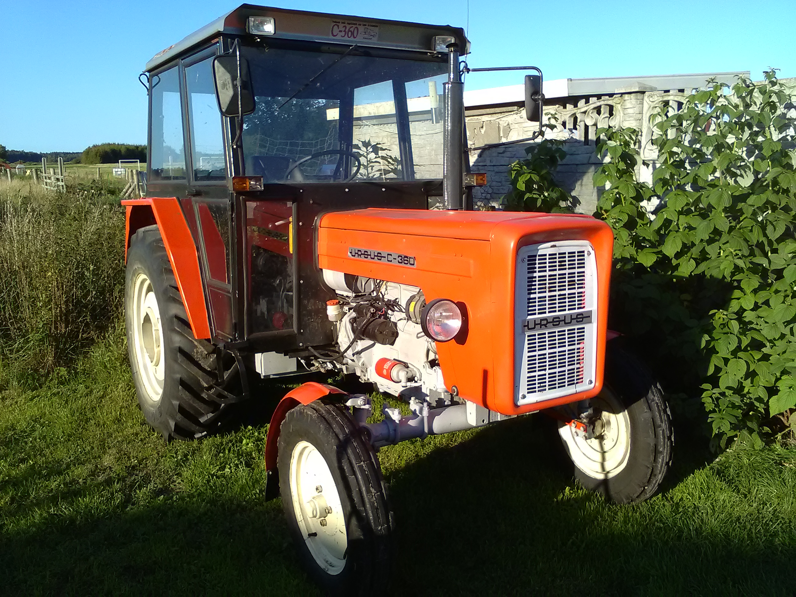
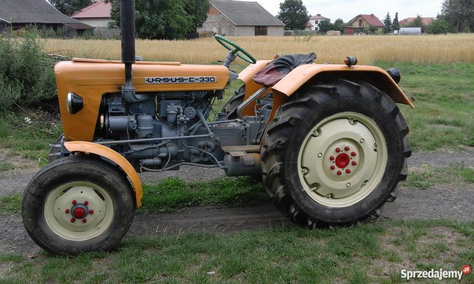
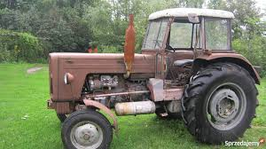

Ciągniki świata!
Ursus c360

Ursus C-360 – średni ciągnik rolniczy produkowany w latach 1976–1994 w Zakładach Mechanicznych Ursus w Warszawie, w liczbie około 282 000 sztuk. Jest to modyfikacja ciągnika Ursus C-355. W roku 2015, URSUS S.A. z siedzibą w Lublinie wprowadza do swojej oferty nowy ciągnik o takiej właśnie nazwie.
Ursus c330

Ursus C-330 – ciągnik rolniczy produkowany w latach 1967–1987 przez zakłady Ursus w Warszawie.
Ursus c355

Ursus C-355 – średni ciągnik rolniczy produkowany w latach 1971–1975 przez zakłady Ursus w Warszawie.